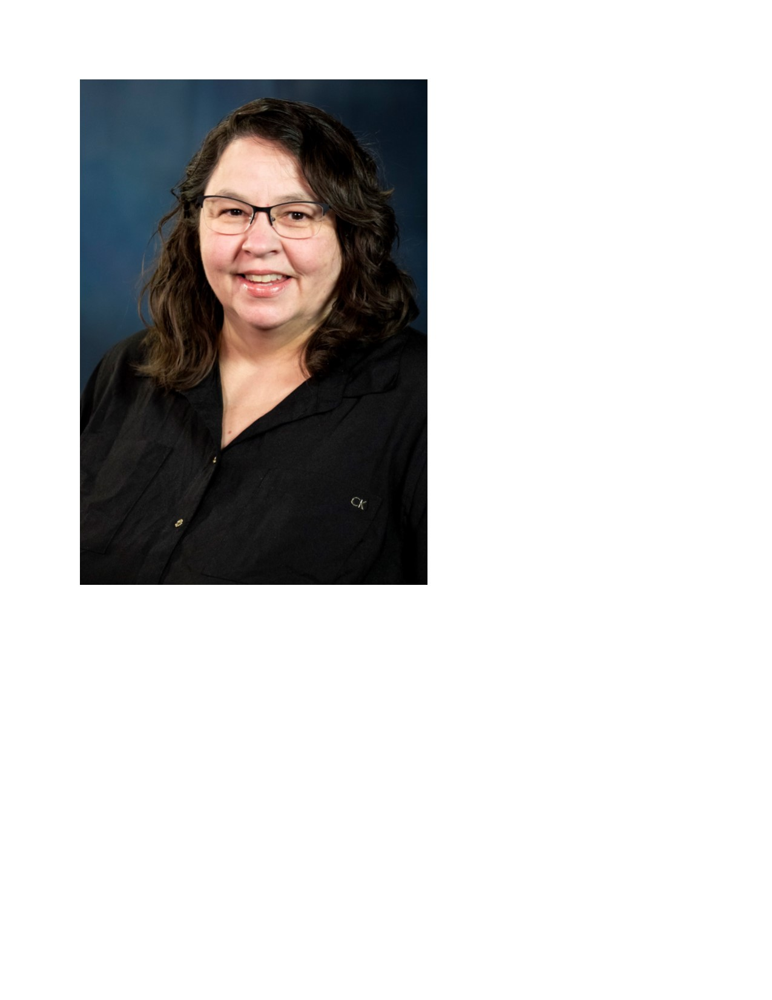

A Little About Me
Greetings! I am Linda Stinson and I live in New London, MO. I work for the Missouri Department of Elementary and Secondary Education in Jefferson City, MO through the Office of College and Career Readiness. My position is a supervisor for the Skilled Technical Sciences department, which I have really enjoyed for the past two years. My previous experience includes teaching Family Consumer Science for 14.5 years, serving as a Family, Career and Community Leaders of America (FCCLA) and ProStart advisor. I left the classroom for a change and desire to help other educators. I am currently pursuing my Education Specialist Degree in Learning Technologies and Design from the University of Missouri School of Information Science and Learning Technologies. I plan to graduate in May of 2022. My goal is to receive my doctorate degree. I look forward to the opportunities that await with my pursuit of higher education.
I am very passionate about Career Technical Education and what it has to offer.
Masters Degree in Education - Quincy University
Bachelor of Arts Family Consumer Science - College of the Ozarks
Stinson Resume Linda